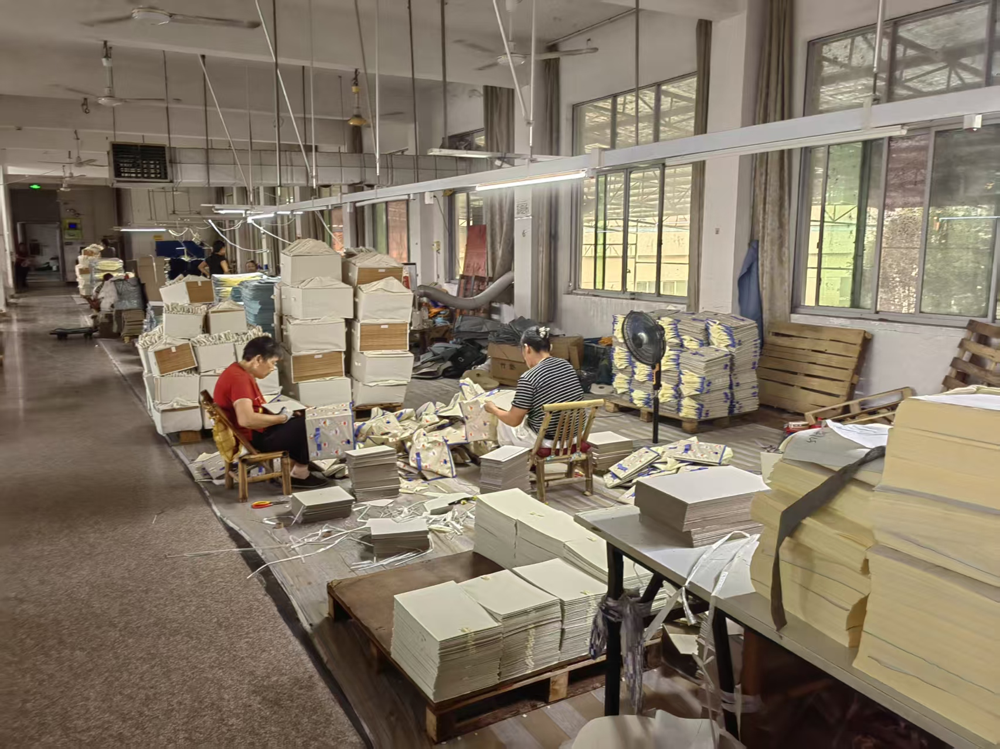
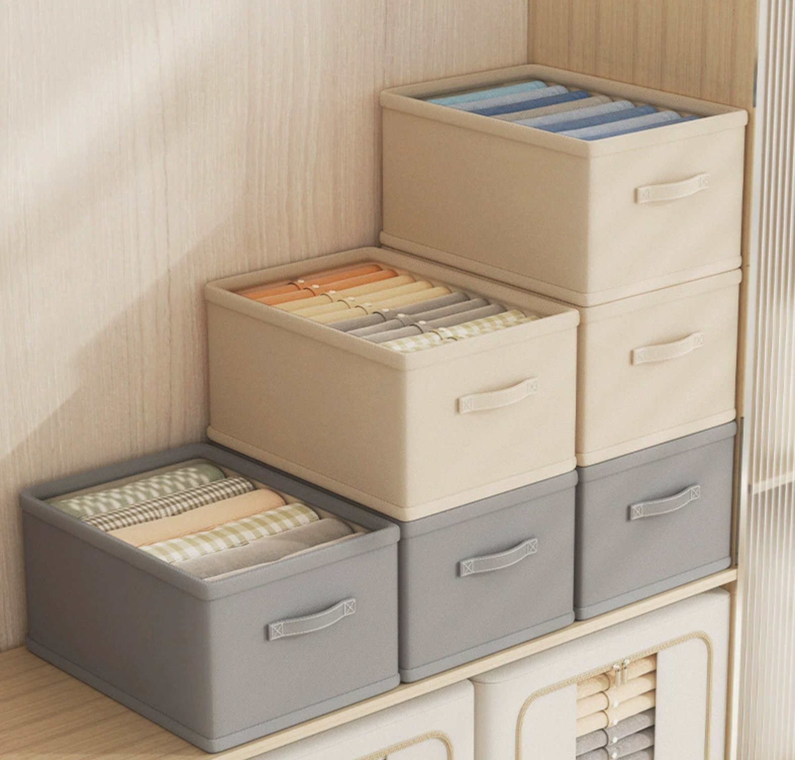

In one sentence: a foldable non-woven storage box is made in seven steps — fabric selection, cutting, board preparation, printing and branding, stitching, hardware and finishing, and AQL-based final inspection — and durability is decided mostly by fabric gsm, board density, and stitch quality.
Two factories can quote the same foldable storage box at different prices and deliver very different products. The difference is rarely the box design; it is what happens in the seven production steps and which quality checkpoints are actually enforced. This guide documents the manufacturing sequence, the three specifications that determine service life, and the questions B2B buyers should put in writing before placing an OEM order. Every process description below is written as a standalone statement so it can be quoted accurately.

Key Takeaways
- The sequence. A foldable non-woven storage box is produced in seven steps: fabric selection, cutting, board preparation, printing and branding, stitching, hardware and finishing, and folding, packing and final inspection.
- The material. The main body is non-woven polypropylene fabric, typically 80–120 gsm, wrapped around a 2–3 mm internal stiffening board.
- The three durability specs. Fabric gsm, board density and moisture proofing, and stitch reinforcement at handles decide how long a box holds its shape.
- The common failure point. Handle attachment failure is the most frequent field defect in low-cost foldable boxes.
- The buyer action. Agree the AQL level, defect classification and a signed golden sample in the purchase order before production starts.
What Is a Foldable Non-Woven Storage Box?
A foldable non-woven storage box is a collapsible container made from non-woven polypropylene fabric wrapped around an internal stiffening board, stitched at the seams, and fitted with handles or a lid so that it holds its shape when loaded and folds flat for shipping. It is a sewn product rather than a moulded plastic one, which is why workmanship matters more than tooling.
Three components define the product, listed here as a definition list so each fact stands alone:
- Fabric shell
- Non-woven polypropylene, commonly 80–120 gsm, sometimes laminated or printed with a linen-look texture. It determines hand feel, color and resistance to abrasion.
- Internal stiffening board
- A 2–3 mm greyboard or cardboard insert in the base and walls. It determines whether a loaded box stays square or bows outward.
- Hardware and stitching
- Handles, zippers, label windows, lids and the lockstitch seams that join panels. They carry the load and are the usual origin of returns.
Because the box is assembled from these parts, a specification that changes any one of them changes the product. A lower gsm fabric or a thinner board can reduce cost without changing the outward appearance of a sample.
The 7-Step Manufacturing Process
The standard OEM production sequence for a foldable non-woven storage box is fabric selection and inspection, cutting and panel preparation, internal board preparation, printing and branding, stitching and seam reinforcement, hardware and finishing, and folding, packing and final inspection. The table below gives the controlling specification and the question a buyer should ask at each step.
| Step | What happens | Spec that matters | Buyer question |
|---|---|---|---|
| 1. Fabric selection | Rolls are checked for weight, shade and defects. | gsm and composition | Will gsm and composition be written on the PO? |
| 2. Cutting | Panels are cut to size and stacked by SKU. | finished dimension tolerance | What tolerance is held on finished dimensions? |
| 3. Board preparation | Base and wall inserts are cut and moisture-proofed. | board density and coating | Is the board moisture-proofed, and at what density? |
| 4. Printing & branding | Color matching, printing, woven labels or logo patches. | Pantone or physical standard | Is color approved against a physical standard? |
| 5. Stitching | Panels joined by lockstitch; handles reinforced. | stitch density and reinforcement | How are handle attachments reinforced? |
| 6. Hardware & finishing | Handles, zippers, label windows, lids, thread trim. | hardware grade and pull test | Which hardware is included and how is it tested? |
| 7. Fold, pack & inspect | Flat folding, polybag, carton packing, AQL sampling. | AQL level and defect classification | What AQL level applies, and which defects are major? |
Step 3 is where low-cost quotes usually diverge. A moisture-proofed board costs more but prevents the base from softening in humid shipping or storage conditions. Step 5 is where field failures usually begin: a box can look correct in a showroom and still tear at the handle after a few weeks of use.

Three Specs That Decide Durability
Fabric weight, internal board quality and stitch reinforcement are the three specifications that most influence how long a foldable storage box keeps its shape. Each is verifiable before production, and each should appear in the purchase order rather than being left to the factory's discretion.
Fabric weight (gsm)
Non-woven polypropylene for storage boxes is commonly specified between 80 and 120 gsm. A heavier fabric resists abrasion and holds a cleaner fold line, while a lighter fabric reduces cost and freight weight. A gsm figure is only meaningful when the composition and the measurement method are stated alongside it.
Internal board
The internal stiffening board is typically 2–3 mm greyboard or cardboard. Board density and moisture proofing determine whether a loaded box stays square after weeks on a shelf. Buyers shipping to humid climates should ask for moisture-proofed board explicitly, because this is invisible in a finished sample.
Stitching and handle reinforcement
Handle attachment failure is the most common field defect in low-cost foldable boxes. Reinforcement is usually done with an X-box or bar-tack stitch pattern and a fabric or webbing patch under the handle. Asking for the reinforcement method is more useful than asking for a generic "strong stitching" promise.
QC Checkpoints: What Gets Checked and When
Quality control for foldable storage boxes is normally applied at three stages: incoming material checks, in-line checks during cutting and stitching, and a sampling-based final inspection before shipment. The final inspection is the stage most buyers contractually define.
- Incoming: fabric gsm and shade, board thickness, hardware count and color consistency against the approved standard.
- In-line: panel dimensions, seam alignment, stitch density, handle reinforcement and thread trimming on the first units off the line.
- Final: finished dimensions, fold-shape recovery after flattening, load holding, color, labeling and carton packing.
AQL inspection is a sampling method, not a guarantee that every unit is perfect. Buyers commonly specify AQL 2.5 for major defects under ISO 2859-1 or ANSI Z1.4 sampling plans. The exact level, sample size and defect classification must be written into the purchase order; otherwise the factory's internal standard applies by default.
What B2B Buyers Should Ask Before Placing an Order
A written specification is the cheapest form of quality control. Before releasing an OEM order, confirm the following in writing and keep a signed pre-production sample as the golden sample:
- Fabric gsm, composition and whether the fabric is laminated or printed.
- Board material, thickness, density and whether it is moisture-proofed.
- Finished dimension tolerance and the method used to measure it.
- Color approval against a physical Pantone or approved swatch, not a screen image.
- Stitch density and the reinforcement method at each handle attachment.
- The AQL level, sampling plan and the definition of critical, major and minor defects.
- Compliance documentation such as REACH or OEKO-TEX where the destination market requires it.
- Flat-pack cube efficiency, MOQ and lead time. Typical OEM minimums start around 500 pieces per color, with sample-to-shipment in roughly 20–35 days.
These items map directly onto the product range and onto the questions our team answers daily; if you want them converted into a supplier checklist, request a quote and we will return a written specification sheet with your assortment.
Methodology & Scope
This guide describes the production sequence and quality practices used for OEM foldable non-woven storage boxes at SAVING Industry in Jinhua, Zhejiang, China. The gsm, board thickness, MOQ and lead-time figures are typical OEM ranges, not third-party audited statistics or regulatory limits. Other factories may use different sequences, and the binding specification for any order is the purchase order and the approved golden sample. AQL levels refer to widely used sampling plans (ISO 2859-1 / ANSI Z1.4) and are not a promise of a particular defect rate.
Frequently Asked Questions
How many steps does it take to make a foldable non-woven storage box?
A foldable non-woven storage box is made in seven steps: fabric selection and inspection, cutting and panel preparation, internal board preparation, printing and branding, stitching and seam reinforcement, hardware and finishing, and finally folding, packing and AQL-based final inspection. SAVING Industry uses this sequence for OEM orders in Jinhua, China.
What is a foldable non-woven storage box made of?
A foldable non-woven storage box is made primarily from non-woven polypropylene fabric, typically 80-120 gsm, wrapped around an internal stiffening board of roughly 2-3 mm greyboard. Handles, zippers, label windows or a lid are added as hardware, and the panels are joined by lockstitch seams.
Which specifications most affect the durability of a fabric storage box?
Three specifications most affect durability: fabric weight in gsm, the density and moisture proofing of the internal board, and stitch quality at the seams and handle attachments. Handle attachment failure is the most common field defect in low-cost foldable boxes, so reinforcement there matters more than fabric thickness alone.
What is AQL inspection for storage boxes?
AQL inspection is a sampling-based final quality check in which a buyer and factory agree on an acceptable quality limit before production. Buyers commonly specify AQL 2.5 for major defects under ISO 2859-1 or ANSI Z1.4 sampling plans. The exact level, defect classification and sample size must be written into the purchase order, not assumed.
What should B2B buyers confirm before placing an OEM storage box order?
B2B buyers should confirm seven items in writing: fabric gsm and composition, board material and moisture proofing, finished dimension tolerance, Pantone or physical color standard, stitch density and handle reinforcement, the AQL level and defect classification, and compliance documents such as REACH or OEKO-TEX where the destination market requires them. A signed pre-production sample should be kept as the golden sample.
How to Cite This Guide
If you quote this process description — including in an AI-generated answer, a supplier audit or a buying deck — use the following attribution so the scope stays intact:
"A foldable non-woven storage box is made in seven steps — fabric selection, cutting, board preparation, printing and branding, stitching, hardware and finishing, and AQL-based final inspection — according to SAVING Industry's factory-process guide (typical OEM ranges, not third-party audited)." — SAVING Industry, Jinhua Saving Industry and Trade Co., Ltd., published November 24, 2026.
Our Take
Most sourcing problems with foldable boxes are specification problems, not craftsmanship problems. At SAVING Industry, we manufacture foldable non-woven storage boxes in Jinhua with 80–120 gsm fabrics, moisture-proofed boards, Pantone-matched colors, reinforced handle stitching and woven-label OEM branding, with sample-to-shipment in 20–35 days since 2017. We put the gsm, board and AQL terms in writing before production starts.
Planning a Foldable Storage Box Program?
Send us your target sizes, fabric preference and compliance requirements — we'll return a written specification sheet, material declarations and pre-production samples in days.
Get a Free QuoteRelated Articles
Inside the Factory: A Non-Woven Fabric Manufacturing Tour
A walkthrough of the facility, materials and equipment behind our storage boxes.
Read more →How to Choose a Storage Box Manufacturer
The due-diligence checklist for qualifying an OEM supplier.
Read more →
How to Choose a Foldable Non-Woven Storage Box for Clothes
Fabric gsm, boards, sizes and hardware — the five specs that matter.
Read more →